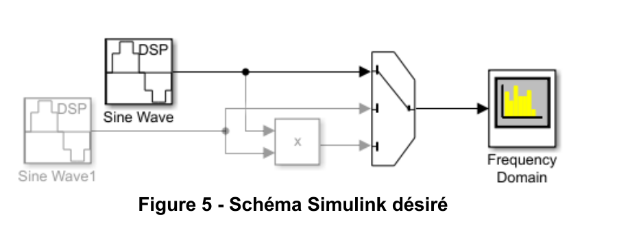

ELE3701A | Laboratory archive
Communication and channel coding labs
Signal analysis, Simulink models and a Hamming 7,4 decoding workflow.
- Status
- Models and scripts
- Focus
- Signals
- Tools and methods
- MATLAB / Simulink / Hamming code

Objective
Explore a communication chain from signal generation and spectral inspection to block-code decoding.
Engineering work
- Organize a Simulink signal-analysis model and setup parameters.
- Prepare bit streams for block decoding.
- Reshape received data into seven-bit words.
- Use the Hamming decoder and reassemble the decoded bit stream.
Outcome
The archive includes simulation models and MATLAB coding helpers. A selected diagram from the lab handout documents the intended signal-analysis setup; it is labeled as reference material rather than a completed experiment screenshot.
Scope and limits
The models and radio hardware have not been run for the portfolio. The decoding helper assumes the framing used by the original exercise, including its header length. It is not a general-purpose radio receiver.
Source excerpt MATLAB
Archived helper, with comments omitted. Requires the Communications Toolbox and the original exercise framing: the first 13 bits are discarded. Not re-executed here.
function msg_final = decodeHamming74(bits)
bits = bits(14:end);
L = length(bits);
excess = mod(L,7);
if excess ~= 0
bits = bits(1:end-excess);
end
bits7 = reshape(bits,7,[])';
decoded = decode(bits7, 7, 4, 'hamming');
msg_final = reshape(decoded.',1,[]);
end
Evidence and documentation
Archived MATLAB decoding helper and ELE3701A TP3 lab handout. Reference diagrams are identified as such.